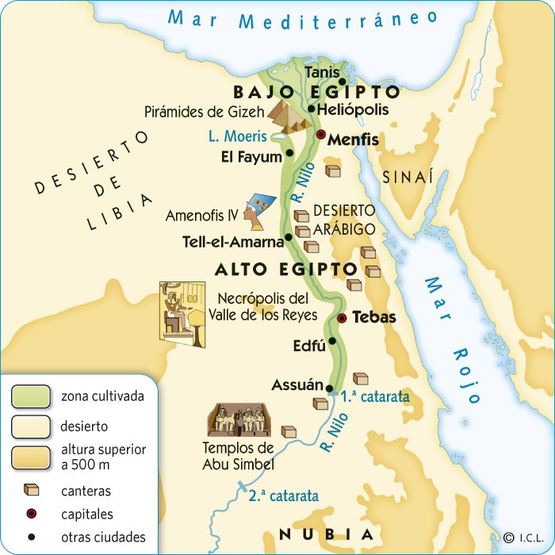

Las primeras civilizaciones: Mesopotamia y Egipto.
El Antiguo Egipto.
La civilización egipcia surge hace más de 5.000 años en el noreste de África, junto al río Nilo, territorio limitado al norte por el mar Mediterráneo y el mar Rojo al este.
El río Nilo era la principal fuente de vida para los egipcios que vivían en sus orillas: les abastecía de agua, era una vía de comunicación y permitía la agricultura.

Geografía del Antiguo Egipto.(CC BY)El río Nilo y el Antiguo Egipto.
Actividad
Lee la introducción del siguiente artículo de la Wikipedia: Antiguo Egipto.
El área del antiguo Egipto ha variado a lo largo de los siglos, pero en general se acepta que abarcaba desde el delta del Nilo en el norte, hasta Elefantina, en la primera catarata del Nilo, en el sur. Además controlaba el desierto oriental, la línea costera del mar Rojo, la península del Sinaí, y un gran territorio occidental dominando los dispersos oasis. Históricamente, estaba formado por el Alto y el Bajo Egipto, al sur y al norte respectivamente, los cuales precedieron a la creación de un estado unificado. En su período de mayor expansión controló los reinos amorreos de Palestina y el norte de Siria, llegando hasta el Éufrates medio, y las jefaturasnubias del Sudán, hasta el Jebel Barkal, en la cuarta catarata del Nilo. Ejerció una importante influencia cultural entre los pueblos vecinos e incluso en regiones tan alejadas como Chipre, la costa de Anatolia y la península helénica.
La civilización egipcia se desarrolló durante más de 3500 años. Comenzó con la unificación de algunas ciudades del valle del Nilo,[3] alrededor del año 3200 a. C.,[4] y convencionalmente se da por finalizada en el año 31 a. C., cuando el Imperio romano conquistó y absorbió el Egipto ptolemaico, el cual desapareció como Estado.[5] Este acontecimiento no representó el primer período de dominación extranjera en Egipto, pero condujo a una transformación gradual en la vida política y religiosa del valle del Nilo, marcando el final del desarrollo independiente de su identidad cultural. Ésta, sin embargo, había comenzado a diluirse paulatinamente tras las conquistas de los persas (siglo VI a. C.) y los macedonios (siglo IV a. C.), especialmente durante el período de los Ptolomeos. Tras la expansión del cristianismo entre los egipcios, Justiniano I prohibió en 535 el culto a la diosa Isis en el templo de File, lo cual terminó con una religión vigente durante más de cuatro milenios. No obstante, el idioma egipcio —llamado copto— siguió utilizándose, escrito en un alfabeto derivado del griego, y los egipcios se identificaron plenamente con el cristianismo, en especial con la doctrina monofisita. Surgió entonces una literatura copta, de carácter cristiano, que recogía mitos, costumbres y creencias de la antigua religión tradicional. La desaparición del copto y su sustitución por el árabe, en el marco de la islamización del país después de su conquista, supuso el final definitivo de los últimos restos del Antiguo Egipto.
Egipto tiene una combinación única de características geográficas, situado en el África nororiental y confinada por Libia, Sudán y los mares Rojo y Mediterráneo. El río Nilo fue la clave para el éxito de la civilización egipcia, ya que permitía el aprovechamiento de los recursos y ofrecía una significativa ventaja sobre otros oponentes: el limo fértil depositado a lo largo de los bancos del Nilo tras las inundaciones anuales significó para los egipcios el practicar una forma de agricultura menos laboriosa que en otras zonas, liberando a la población para dedicar más tiempo y recursos al desarrollo cultural, tecnológico y artístico.
La vida se ordenaba en torno al desarrollo de un sistema de escritura y de una literatura independientes, así como en un cuidadoso control estatal sobre los recursos naturales y humanos, caracterizado sobre todo por la irrigación de la fértil cuenca del Nilo y la explotación minera del valle y de las regiones desérticas circundantes, la organización de proyectos colectivos como las grandes obras públicas, el comercio con las regiones vecinas de África del este y central y con las del Mediterráneo oriental y, finalmente, por un poderío capaz de derrotar a cualquier enemigo, y que mantuvieron una hegemonía imperial y la dominación territorial de civilizaciones vecinas en diversos períodos. La motivación y la organización de estas actividades estaba encomendada a una burocracia de élite sociopolítica y económica, los escribas, bajo el control del Faraón, un personaje semidivino, perteneciente a una sucesión de dinastías, que garantizaba la cooperación y la unidad del pueblo egipcio en el contexto de un elaborado sistema de creencias religiosas.[6][7]
Los muchos logros de los egipcios incluyen la extracción minera, la topografía y las técnicas de construcción que facilitaron el levantamiento de monumentales pirámides, templos y obeliscos, unos procedimientos matemáticos, una práctica médica eficaz, métodos de riego y técnicas de producción agrícola, las primeras naves conocidas,[8] la tecnología del vidrio y de la fayenza, las nuevas formas de la literatura y el tratado de paz más antiguo conocido, firmado con los hititas.[9] Egipto dejó un legado duradero, su arte y arquitectura fueron ampliamente copiados, y sus antigüedades se llevaron a los rincones más lejanos del mundo. Sus ruinas monumentales han inspirado la imaginación de los viajeros y escritores desde hace siglos. Un nuevo respeto por las antigüedades y excavaciones en la época moderna han llevado a la investigación científica de la civilización egipcia y a una mayor apreciación de su legado cultural.[10]
El nombre original del país, especialmente durante el Imperio antiguo, fue Kemet (Km.t), pronunciado probablemente /kumat/,[11] 'tierra negra', por el color del limo fertilizante que cubría durante la regular inundación anual el valle que se encuentra a orillas del río Nilo, en oposición a Deshret (dsr.t, 'tierra roja'), por la arena del desierto del Sahara, que cubre la mayor parte del territorio egipcio.
El territorio del Antiguo Egipto estaba constituido por el Delta y en la Luna fértil , una estrecha y larga franja en el noreste de África; un territorio fértil de menos de 60 kilómetros de ancho y 1200 kilómetros de largo, flanqueado en gran parte por el desierto del Sáhara. El Nilo es uno de los mayores cursos fluviales del mundo. Nace en el África centrooriental (en los lagos Victoria Nyanza, Alberto Nyanza y Tana) y desemboca en el mar Mediterráneo conformando el delta del Nilo.
La geografía del Antiguo Egipto es muy significativa e influyó mucho en su cultura. Egipto está situado en el noreste de África y está muy aislado de otros países por su situación geográfica. Sus límites son: por el oeste el desierto de Libia; por el este del mar Rojo y el desierto de Arabia; por el norte el mar Mediterráneo y por el sur el macizo de Etiopía y el desierto de Nubia. Ese medio natural circundante limitaba los contactos con el exterior, permitiendo que una cultura original se desarrollara con menos influencias que otras civilizaciones.
La obtención de una cronología exacta del antiguo Egipto es una tarea compleja. Existen diversos criterios de datación entre egiptólogos, con divergencias de algunos años en los últimos períodos, de décadas al principio del Imperio Nuevo y de casi un siglo durante el Reino Antiguo (véase: Cronología del Antiguo Egipto).
El primer problema surge por el hecho de que los egipcios no utilizaron un sistema de datación homogéneo: no tenían un concepto de una era similar al Anno Domini, o la costumbre de nombrar los años, como en Mesopotamia (véase Limmu). Databan con referencia a los reinados de los diversos faraones, solapando posiblemente los interregnos y las épocas de corregencia. Un problema añadido surge al comparar las distintas Listas Reales de faraones, pues están incompletas o con datos contradictorios, incluso en el mismo texto. Las obras del mejor historiador antiguo sobre Egipto, Manetón, se perdieron y solo las conocemos a través de epítomes de escritores posteriores como Flavio Josefo, Eusebio de Cesarea, Sexto Julio Africano o el monje Jorge Sincelo. Desafortunadamente las fechas de algunos reinados varían de uno a otro autor.
Las evidencias arqueológicas indican que la civilización egipcia comenzó alrededor del VI milenio a. C., durante el Neolítico, cuando se asentaron los primeros pobladores (véase el periodo predinástico). El río Nilo, en torno al cual se asienta la población, ha sido la línea de referencia para la cultura egipcia desde que los nómadascazadores-recolectores comenzaron a vivir en sus riberas durante el pleistoceno. Los rastros de estos primeros pobladores quedaron en los objetos y signos grabados en las rocas a lo largo del valle del Nilo y en los oasis.
A lo largo del Nilo, en el XI milenio a. C., una cultura de recolectores de grano había sido sustituida por otra de cazadores, pescadores y recolectores que usaban herramientas de piedra. Los estudios también indican asentamientos humanos en el sudoeste de Egipto, cerca de la frontera con Sudán, antes del 8000 a. C. La evidencia geológica y estudios climatológicos sugieren que los cambios del clima, alrededor del 8000 a. C., comenzaron a desecar las tierras de caza y pastoreo de Egipto, conformándose paulatinamente el desierto del Sáhara. Las tribus de la región tendieron a agruparse cerca del río, en donde surgieron pequeños poblados que desarrollaron una economía agrícola. Hay evidencias de pastoreo y del cultivo de cereales en el este del Sáhara en el VII milenio a. C.
Alrededor del 6000 a. C., ya había aparecido en el valle del Nilo la agricultura organizada y la construcción de grandes poblados. Al mismo tiempo, en el sudoeste se dedicaban a la ganadería y también construían. El mortero de cal se usaba ya en el 4000 a. C. Es el denominado periodo predinástico, que empieza con la cultura de Naqada.
Entre el 5500 y el 3100 a. C., durante el Predinástico, los asentamientos pequeños prosperaron a lo largo del Nilo. En el 3300 a. C., momentos antes de la primera dinastía, Egipto estaba dividido en dos reinos, conocidos como Alto Egipto (Ta Shemau) y Bajo Egipto (Ta Mehu).[12] La frontera entre ambos se situaba en la actual zona de El Cairo, al sur del delta del Nilo.
La historia de Egipto, como Estado unificado, comienza alrededor del 3050 a. C. con Menes (Narmer), que unificó el Alto y el Bajo Egipto y fue su primer rey. La cultura y costumbres egipcias fueron notablemente estables y apenas variaron en casi 3000 años, incluyendo religión, expresión artística, arquitectura y estructura social.
La cronología de los reyes egipcios da comienzo en esa época. La cronología convencional es la aceptada durante el siglo XX, sin incluir cualquiera de las revisiones que se han hecho en ese tiempo. Incluso en un mismo trabajo, los arqueólogos ofrecen a menudo, como posibles, varias fechas e incluso varias cronologías, y por ello puede haber discrepancias entre las fechas mostradas en las distintas fuentes. También se dan varias posibles transcripciones de los nombres. Tradicionalmente la egiptología clasifica la historia de la civilización faraónica dividida en dinastías, siguiendo la estructura narrativa de los epítomes de la Aegyptiaca (Historia de Egipto), del sacerdote egipcio Manetón.
Los primeros pobladores de Egipto alcanzaron las riberas del río Nilo, por entonces un conglomerado de marismas y foco de paludismo, en su huida de la creciente desertización del Sáhara.
Un típico Naqada II jarra decorada con gacelas. (Periodo predinástico)
Se sabe por los restos arqueológicos que antiguamente el Sáhara tenía un clima mediterráneo, más húmedo que el actual. En los macizos del Ahaggar y el Tibesti había abundante vegetación. Para aquellos pobladores, el Sáhara sería una extensa estepa con grandes herbívoros que cazar. Las culturas saharianas son, en gran medida, desconocidas, pero no por ello inexistentes.
Las sucesivas fases del neolítico están representadas por las culturas de El Fayum, hacia el 5000 a. C., la cultura tasiense, hacia el 4500 a. C. y la cultura de Merimde, hacia el 4000 a. C. Todas ellas conocen la piedra pulimentada, la cerámica, la agricultura y la ganadería. La base de la economía era la agricultura que se realizaba aprovechando el limo, fertilizante natural que aportaban las anuales inundaciones del río Nilo.
Vasija de terracota con forma de ave (Naqada II). Louvre.
Tras estas culturas aparecieron la badariense y la amratiense o Naqada I, entre 4000 y 3800 a. C.
Hacia el año 3600 a. C. surge la gerzeense o Naqada II, que se difunde por todo Egipto, unificándolo culturalmente. Esta consonancia cultural llevará a la unidad política, que surgirá tras un periodo de luchas y alianzas entre clanes para imponer su supremacía.
Para lograr mayor eficacia y producción, hacia 3500 a. C., comenzaron a realizarse las primeras obras de canalización y surge la escritura con jeroglíficos en Abidos. En esta época comenzaron los proto-Estados: Las primeras comunidades hicieron habitable el país y se organizaron en regiones llamadas nomos. Los habitantes del Delta tenían una organización feudal y llegaron a establecer dos reinos con dos jefes o monarcas respectivamente. Un reino estaba asentado en un lugar pantanoso, que se llamaba reino del Junco y tenía como símbolo un tallo de junco. Su capital era Buto; tenían a una cobra como tótem. El otro reino tenía como capital a Busiris y como tótem un buitre pero su símbolo era una abeja y llegó a conocerse como reino de la Abeja. Ambos reinos estaban separados por un brazo del río Nilo.
El reino de la Abeja conquistó al reino del Junco de manera que el Delta quedó unificado. Pero algunos de los vencidos huyeron a establecerse en la zona del Alto Egipto donde fundaron ciudades dándoles el mismo nombre que aquellas que habían dejado en el Delta. Por eso muchas ciudades de esta época tienen nombres semejantes en el Alto y Bajo Egipto. Esta gente fue prosperando considerablemente hasta llegar a organizarse en un Estado.
Paleta ceremonial de época protodinástica. Louvre.
Considerado la fase final del periodo predinástico, también conocido como dinastía 0, predinástico tardío, o periodo Naqada III. Está regido por gobernantes del Alto Egipto que residirán en Tinis, se hacen representar con un serej y adoran a Horus. El nombre de estos reyes figura en la Piedra de Palermo, grabada 700 años después. En este periodo surgen las primeras auténticas ciudades, tales como Tinis, Nubet, Nejeb, Nejen, etc. Son típicos de esta época los magníficos vasos tallados en piedra, cuchillos y paletas ceremoniales, o las cabezas de mazas votivas. Narmer pudo ser el último rey de esta época, y el fundador de la dinastía I.
Cuchillo ceremonial de época arcaica. Royal Ontario Museum.
A finales del periodo predinástico, Egipto se encontraba dividido en pequeños reinos; los principales eran: el de Hieracómpolis (Nejen) en el Alto Egipto y el de Buto (Pe) en el Bajo Egipto. El proceso de unificación fue llevado a cabo por los reyes de Hieracómpolis.
La tradición egipcia atribuyó la unificación a Menes, quedando esto reflejado en las Listas Reales. Este personaje es, según Alan Gardiner, el rey Narmer, el primer faraón del cual se tiene constancia que reinó todo Egipto, tras una serie de luchas, tal como quedó atestiguado en la paleta de Narmer. Este periodo lo conforman las dinastías I y II.
Bajo la dinastía III la capital se estableció definitivamente en Menfis, de donde procede la denominación del país, ya que el nombre del principal templo, Hat Ka Ptah «casa del espíritu de Ptah», que pasó al griego como Aegyptos, con el tiempo designó primero al barrio en el que se encontraba, luego a toda la ciudad y más tarde al reino.
En la época de la tercera dinastía comenzó la costumbre de erigir grandes pirámides y monumentales conjuntos en piedra, gracias al faraón Dyeser. También las grandes pirámides de Guiza, atribuidas a los faraones Keops, Kefrén y Micerino se datan en este periodo.
La dinastía V marca el ascenso del alto clero y los influyentes gobernadores locales (nomarcas), y durante el largo reinado de Pepy II se acentuará una época de fuerte descentralización, denominada primer periodo intermedio de Egipto. El Imperio Antiguo comprende las dinastías III a VI.
Fue una época donde el poder estaba descentralizado y transcurre entre el Imperio Antiguo y el Imperio Medio. Comprende desde la dinastía VII hasta mediados de la dinastía XI, cuando Mentuhotep II reunificó el país bajo su mando. A pesar de la decadencia, esta época destacó por un gran florecimiento literario, con textos doctrinales o didácticos, que muestran el gran cambio social. El importante cambio de mentalidad, así como del crecimiento de las clases medias en las ciudades originó una nueva concepción de las creencias, reflejándose en la aparición de los denominados Textos de los Sarcófagos. Osiris se convirtió en la divinidad más popular, con Montu y Amón. Los nomos de Heracleópolis y Tebas se constituyeron como hegemónicos, imponiéndose finalmente este último. Son las dinastías VII a XI.
Amenemhat III, el último monarca grande del Imperio Medio.
Se considera que se inicia con la reunificación de Egipto bajo Mentuhotep II. Es un periodo de gran prosperidad económica y expansión exterior, con faraones pragmáticos y emprendedores. Este periodo lo conforma el final de la dinastía XI y la XII.
Se realizaron ambiciosos proyectos de irrigación en El Fayum, para regular las grandes inundaciones del Nilo desviándolo hacia el lago Moeris (El Fayum). También se potenciaron las relaciones comerciales con las regiones circundantes africanas, asiáticas y mediterráneas. Las representaciones artísticas se humanizaron, y se impuso el culto al dios Amón. A mediados de 1800 a. C., los dirigentes hicsos vencieron a los faraones egipcios; lo que comenzó como una migración paulatina de libios y cananeos hacia el delta del Nilo, se transformó con el tiempo en conquista militar de casi todo el territorio egipcio, originando la caída del Imperio Medio. Los hicsos vencieron porque poseían mejores armas, y supieron utilizar el factor sorpresa.
Durante gran parte de este periodo dominaron Egipto los gobernantes hicsos, jefes de pueblos nómadas de la periferia, especialmente libios y asiáticos, que se establecieron en el delta, y tuvieron como capital la ciudad de Avaris. Finalmente, los dirigentes egipcios de Tebas declararon la independencia, siendo denominados la dinastía XVII. Proclamaron la «salvación de Egipto» y dirigieron una «guerra de liberación» contra los hicsos. Fueron las dinastías XIII a XVII, parcialmente coetáneas.
Es un periodo de gran expansión exterior, tanto en Asia —donde llegan al Éufrates— como en Kush (Nubia). La dinastía XVIII comenzó con una serie de faraones guerreros, desde Amosis I hasta Tutmosis III y Tutmosis IV. Bajo Amenofis III se detuvo la expansión y se inició un período de paz interna y externa.
Después de un período de debilidad monárquica, llegaron al poder las castas militares, la dinastía XIX o Ramésida que, fundamentalmente bajo Seti I y Ramsés II, se mostró enérgica contra los expansionistas reyes hititas.
Dyeser-Dyeseru (el sublime de los sublimes) de Hatshepsut es el edificio principal del complejo de templos funerarios en Deir el-Bahari.
Los faraones del Imperio Nuevo iniciaron una campaña de construcción a gran escala para promover al dios Amón, cuyo creciente culto se asentaba en Karnak. También construyeron monumentos para glorificar a sus propios logros, tanto reales como imaginarios. Hatshepsut utilizará tal hipérbole durante su reinado de casi veintidós años que fue muy exitoso, marcado por un largo período de paz y prosperidad, con expediciones comerciales a Punt, la restauración de las redes de comercio exterior, grandes proyectos de construcción, incluyendo un elegante templo funerario que rivaliza con la arquitectura griega de mil años más tarde, obeliscos colosales y una capilla en Karnak.
A pesar de sus logros, el heredero de Hatshepsut, su hijastro Tutmosis III, trató de borrar toda huella de su legado hacia el final del reinado, apropiándose de muchos de sus logros. Él también intentó cambiar muchas tradiciones establecidas que se habían desarrollado a lo largo de siglos. Posiblemente fue un intento inútil de evitar que otras mujeres se convirtiesen en faraón y frenar así su influencia en el reino.
Alrededor de 1350 a. C., la estabilidad del Imperio parecía amenazada, aún más cuando Amenhotep IV ascendió al trono e instituyó una serie de reformas radicales, que tuvieron un resultado caótico. Cambiando su nombre por el de Ajenatón, promovió como deidad suprema la hasta entonces oscura deidad solar Atón, iniciando una reforma religiosa tendente al monoteísmo. En parte, el monoteísmo de Ajenatón fue un producto del absolutismo real; los viejos dioses habían desaparecido, pero el rey mantenía —para su propio beneficio político— su papel tradicional como mediador entre los hombres y los deseos del nuevo dios. El faraón suprimió el culto a la mayoría de las demás deidades y, sobre todo, trató de anular el poder de los influyentes sacerdotes de Amón en Tebas, a quienes veía como corruptos. Al trasladar la capital a la nueva ciudad de Ajet-Atón (actual Amarna), Ajenatón hizo oídos sordos a los acontecimientos del Cercano Oriente (donde los hititas, Mitanni y los asirios se disputaban el control) y se concentró únicamente en la nueva religión. La nueva filosofía religiosa conllevó un nuevo estilo artístico, que resaltaba la humanidad del rey por encima de la monumentalidad.
Después de su muerte, el culto de Atón fue abandonado rápidamente, los sacerdotes de Amón recuperaron el poder y devolvieron la capital a Tebas. Bajo su influencia los faraones posteriores —Tutankamon, Ay y Horemheb— intentaron borrar toda mención de Akenatón y su «herejía», ahora conocida como el Período de Amarna.
Cuatro estatuas colosales de Ramsés II flanquean la entrada de su templo de Abu Simbel.
Alrededor de 1279 a. C. ascendió al trono Ramsés II, también conocido como el Grande. El suyo sería uno de los reinados más largos de la historia egipcia. Mandó construir más templos, más estatuas y obeliscos, y engendrar más hijos que cualquier otro faraón. Audaz líder militar, Ramsés II condujo su ejército contra los hititas en la batalla de Kadesh (en la actual Siria); después de llegar a un punto muerto, finalmente aceptó un tratado de paz con el reino hitita. Es el tratado de paz más antiguo registrado, en torno a 1258 antes de Cristo. Egipto se retiró de la mayor parte de sus posesiones asiáticas dejando a los hititas competir, sin éxito, con el creciente poder emergente de Asiria y los recién llegados frigios.
La riqueza de Egipto, sin embargo, se había convertido en un objetivo tentador para la invasión; en particular, para los libios beduinos del oeste y los pueblos del mar, que formaban parte de la poderosa confederación de piratas griegos del mar Egeo. Inicialmente, el ejército fue capaz de repeler las invasiones, pero Egipto terminó por perder el control de sus territorios en el sur de Siria y Canaán, que en gran parte cayeron en poder de los asirios e hititas. El impacto de las amenazas externas se vio agravado por problemas internos como la corrupción, el robo de las tumbas reales y los disturbios populares. Después de recuperar su poder, los sumos sacerdotes del templo de Amón en Tebas habían acumulado vastas extensiones de tierra y mucha riqueza, debilitando al Estado. El país terminó dividido, dando inicio al Tercer Periodo Intermedio.
Comienza con la instauración de dos dinastías de origen libio que se repartieron Egipto: una, desde Tanis, la bíblica Zoán, en el Bajo Egipto, y otra, cuyos reyes tomaron el título de Sumos sacerdotes de Amón, desde Tebas. El periodo termina con la dominación de los reyes Cushitas. Son las dinastías, parcialmente coetáneas, XXI a XXV.
Comienza con la dinastía Saíta, sigue una dinastía nubia, un intento de invasión asirio y con dos periodos de dominación persa, así como con varias dinastías coetáneas de gobernantes egipcios independientes. Egipto se convirtió finalmente en una satrapía. Son las dinastías XXVI a XXXI.
Se inicia con la conquista de Αἴɣυπτος (Aígyptos) por Alejandro Magno de Macedonia en 332 a. C., y la llegada al poder en 305 a. C. de la dinastía ptolemaica, de origen macedonio. Finaliza con la incorporación de Egipto al Imperio romano tras la batalla de Actium, en el año 31 a. C. En el año 30 a. C. muere Cleopatra y Egipto se convierte en una provincia del Imperio romano.
El 30 de julio del año 30 a. C., Octavio entró en Alejandría, liquidando definitivamente la independencia política de Egipto y convirtiéndolo en provincia romana.
Pasó a sus sucesores el Imperio bizantino después que el Imperio romano fuera repartido el año 395 en Occidente y Oriente, y permaneció en sus manos hasta la conquista por el pueblo árabe del año 640. Los últimos vestigios de la tradicional cultura del Antiguo Egipto finalizan definitivamente a comienzos del s. VI d. C., con los últimos sacerdotes de Isis, que oficiaban el templo de la isla de File, al proscribirse el culto a los «dioses paganos».
Estatua de Maat, adorada con la pluma de avestruz de la verdad.
La cabeza del sistema legal era oficialmente el faraón, responsable de promulgar leyes, impartir justicia y mantener el orden público, un concepto al que los antiguos egipcios se referían como Maat.[13] Aunque no se conservan códigos legales del Antiguo Egipto, los documentos judiciales muestran que la ley egipcia se basaba en una visión de lo correcto y lo incorrecto basada en el sentido común, que hacía hincapié en llegar a acuerdos y resolver conflictos en lugar de adherirse estrictamente a un complicado conjunto de estatutos.[14] Los consejos locales de ancianos, conocidos como kenbet en el Imperio Nuevo, se encargaban de dictar sentencia en casos judiciales relacionados con pequeñas reclamaciones y disputas menores.[13] Los casos más graves, como asesinatos, grandes transacciones de tierras y robos de tumbas, se remitían al Gran kenbet, presidido por el chaty o, en casos especiales, por el faraón. Demandantes y demandados debían representarse a sí mismos y prestar juramento de decir la verdad. En algunos casos, el Estado asumía tanto el papel de fiscal como el de juez, y podía torturar al acusado con palizas para obtener una confesión y los nombres de los posibles cómplices. Tanto si los cargos eran triviales como graves, los escribas del tribunal documentaban la denuncia, el testimonio y el veredicto del caso para futuras referencias.[15]
Los delitos menores se castigaban con multas, palizas, mutilaciones faciales o el exilio, dependiendo de la gravedad del delito. Los delitos graves, como el asesinato y el robo de tumbas, se castigaban con la ejecución, que se llevaba a cabo decapitando, ahogando o empalando al criminal en una estaca. A partir del Imperio Nuevo, los oráculos desempeñaron un papel importante en el sistema legal, impartiendo justicia tanto en casos civiles como penales. El procedimiento consistía en plantear al dios oracular una pregunta de "sí" o "no" sobre lo correcto o incorrecto de un asunto. El dios, transportado por varios sacerdotes, dictaba sentencia eligiendo una u otra respuesta, avanzando o retrocediendo, o señalando una de las respuestas escritas en un trozo de papiro o en un óstraco.[16]
La economía de Egipto se basaba en la agricultura y la ganadería. La vida dependía de los cultivos de las tierras inundadas por el río Nilo.[17] Tenían un sistema de diques, estanques y canales de riego que se extendían por todas las tierras de cultivo. En las riberas del Nilo los campesinos egipcios cultivaban muchas clases de cereales. El grano cosechado se guardaba en graneros y luego se usaba para elaborar pan y cerveza. Las cosechas principales eran de trigo, cebada y lino.
La agricultura estaba centrada en el ciclo del Nilo.Había cuatro estaciones: "perla blanca" (es cuando crece el Nilo y se desborda produciendo una gran inundación, también traía lodo fértil), «perla negra» (es cuando el Nilo baja y deja barro negro en la orilla, que se usa en la agricultura), "la esmeralda verde" (es cuando brotan las cosechas) y «oro rojo» (es cuando los sembríos maduran).
Había tres estaciones: Akhet, Peret, y Shemu. Akhet, la estación de la inundación, duraba de junio a septiembre. Después de la inundación quedaba una capa de limo en los bancos, enriqueciendo la tierra para la cosecha siguiente. En Peret, la estación de la siembra entre octubre y febrero, los granjeros esperaban hasta que se drenaba el agua, y araban y sembraban el rico suelo. Acabada la labor, irrigaban usando diques y canales. Seguía Shemu, la estación de la cosecha de marzo a mayo, cuando se recolectaba con hoces de madera.
Los egipcios cultivaban más alimentos de los que necesitaban, y hacían intercambio de sus productos. Algunas de las materias que ellos importaban de territorios extranjeros eran el incienso, la plata, y madera fina de cedro. Gran parte de los productos del comercio egipcio se transportaba en barcos, por el Nilo y el Mediterráneo.
Durante la mayor parte de su existencia, unos tres milenios, el Antiguo Egipto fue el país más rico del mundo.
Las transacciones comerciales de los antiguos egipcios no se limitaban al intercambio de productos agrícolas o de materias primas, sino que también hay constancia de expediciones para nutrir de bienes ornamentales y joyas el tesoro real de los faraones, y de actividades de venta de esclavos, e incluso de los propios cargos administrativos o de servicio en los templos.
En el Antiguo Egipto existía la figura de los shutiu, una especie de agentes comerciales que efectuaban actividades de compraventa al servicio de las grandes instituciones faraónicas (templos, palacio real, grandes explotaciones de la corona, etc.). Pero también podían vender esclavos a simples particulares, o podían realizar transacciones comerciales al margen de las instituciones en provecho propio.
Las casi 200 tablillas de arcilla y las numerosas inscripciones descubiertas por los arqueólogos en la antigua ciudad de Balat demuestran que esta localidad, situada en pleno Sahara egipcio, fue utilizada como base de operaciones y punto de abastecimiento a las expediciones comerciales enviadas por los faraones hacia el corazón de África a finales del tercer milenio a. C. Desde este enclave en el oasis de Dajla partirían expediciones, compuestas por unos 400 hombres, cuyo objeto era buscar un pigmento que una vez obtenido se enviaba mediante caravanas al valle del Nilo.
La ruta estaría marcada desde épocas antiquísimas como prueba la presencia de depósitos de jarras situados a intervalos de 30 kilómetros en el desierto, que llegan hasta Gilf el-Kebir[2] en el extremo sudoccidental de Egipto. Se desconoce hasta dónde llegaba la ruta, aunque los especialistas aceptan como hipótesis más probable que llegase hasta la zona del lago Chad.[18]
Egipto estaba dividido en varios sepats (provincias, o nomos en griego) con fines administrativos. Esta división se puede remontar de nuevo al período predinástico (antes de 3100 a. C.), cuando los nomos eran ciudades-Estado autónomas, y permanecieron por más de tres milenios, manteniendo sus costumbres. Bajo este sistema, el país fue dividido en 42 nomos: 20 del Bajo Egipto, mientras que el Alto Egipto abarcaba 22 nomos. Cada nomo estaba gobernado por un nomarca, gobernador provincial que ostentaba la autoridad regional.
El gobierno impuso diversos impuestos, que al no existir moneda eran pagados en especie, con trabajo o mercancías. El Tyaty (visir) era el responsable de controlar el sistema impositivo en nombre del faraón, a través de su departamento. Sus subordinados debían tener al día las reservas almacenadas y sus previsiones. Los impuestos se pagaban según el trabajo o las rentas de cada uno, los campesinos (o los terratenientes en periodos posteriores) en productos agrícolas, los artesanos con parte de su producción, y de forma similar los pescadores, cazadores, etc.
El estado requería una persona de cada casa para realizar trabajos públicos algunas semanas al año, haciendo o limpiando canales, en la construcción de templos o tumbas e incluso en la minería (esto último, solo si no había prisioneros de guerra). Los cazadores y pescadores pagaban sus impuestos con capturas del río, de los canales, y del desierto. Las familias acomodadas podían contratar sustitutos para poder satisfacer este derecho.
El egipcio antiguo constituye una parte independiente de la lengua de la (macro) familiaafroasiática. Sus parientes más cercanos son los grupos bereber, semítico y Beja. Los documentos escritos más antiguos en lengua egipcia se han fechado en el 3200 a. C., haciéndola una de las más antiguas y documentadas. Los eruditos agrupan al egipcio en siete divisiones cronológicas importantes:
Recogido en las inscripciones del último predinástico y del arcaico. La evidencia más temprana de escritura jeroglífica egipcia aparece en los recipientes de cerámica de Naqada II.
Egipcio antiguo (3000-2000 a. C.)
Es la lengua del Imperio Antiguo y del primer período intermedio. Los textos de las pirámides son el cuerpo mayor de la literatura de esta fase, escritos en las paredes de las tumbas de la aristocracia, que a partir de este período también muestran escrituras autobiográficas. Una de las características que lo distinguen es la triple mezcla de ideogramas, fonogramas, y de determinativos para indicar el plural. No tiene grandes diferencias con la etapa siguiente.
Egipcio clásico (2000-1300 a. C.)
Esta etapa, llamada también media, se conoce por una variedad de textos en escritura jeroglífica y hierática, datadas en el Imperio Medio. Incluyen los textos funerarios inscritos en los ataúdes tales como los Textos de los Sarcófagos; textos que explican cómo conducirse en la otra vida, y que ejemplifican el punto de vista filosófico egipcio (véase el papiro de Ipuur); cuentos que detallan las aventuras de ciertos individuos, por ejemplo la historia de Sinuhe; textos médicos y científicos tales como el papiro Edwin Smith y el de Ebers; y textos poéticos que elogian a un dios o a un faraón, tal como el himno al Nilo. El idioma vernáculo comenzó a diferenciarse de la lengua escrita tal como evidencian algunos textos hieráticos del Imperio medio, pero el egipcio clásico continuó siendo usado en los escritos formales hasta el último período dinástico.
Fragmento de escritura jeroglífica en egipcio tardío. Tumba de Seti I.
Egipcio tardío (1300-700 a. C.)
Aparecen documentos de esta etapa en la segunda parte del Imperio Nuevo. Forman un amplio conjunto de textos de literatura religiosa y secular, abarcando ejemplos famosos tales como la historia de Unamón (Wenamun) y las instrucciones del Ani. Era la lengua de la administración ramésida. No es totalmente distinto del egipcio medio, ya que aparecen muchos clasicismos en los documentos históricos y literarios de esta fase, sin embargo, la diferencia entre el clásico y el tardío es mayor que entre aquel y el antiguo. También representa mejor la lengua hablada desde el Imperio Nuevo. La ortografía jeroglífica consiguió una gran expansión de su inventario gráfico entre el periodo Tardío y el Ptolemaico.
La lengua demótica es cronológicamente la última, se comenzó a usar alrededor del 660 a. C. y se convirtió en la escritura dominante cerca del 600 a. C., usándose con fines económicos y literarios. En contraste con el hierático, que solía escribirse en papiros u ostracas, el demótico se grababa además en piedra y madera.
En los textos escritos en etapas anteriores, probablemente representó el idioma hablado de la época. Pero al ser utilizada cada vez más solamente con propósitos literarios y religiosos, la lengua escrita divergió cada vez más de la forma hablada, dando a los últimos textos demóticos un carácter artificial, similar al uso del egipcio medio clásico durante el período Ptolemaico. A inicios del siglo IV comenzó a ser reemplazado por el idioma griego en los textos oficiales: el último uso que se conoce es en el año 452 d. C., sobre los muros del templo dedicado a Isis, en File. Comparte mucho con la lengua copta posterior.
Fue el idioma de la corte tras la conquista de Alejandro, el dialecto koiné, «lengua común», que era una variante del ático utilizada en el mundo helenístico, y que en Egipto convivió con el copto empleado por el pueblo llano.
Está testimoniado alrededor del siglo III, y aparece escrito con signos jeroglíficos, o en los alfabetos hierático y demótico. El alfabeto copto es una versión ligeramente modificada del alfabeto griego, con algunas letras propias demóticas utilizadas para representar varios sonidos no existentes en el griego. Como lengua cotidiana tuvo su apogeo desde el siglo III hasta el siglo VI, y perdura solo como lengua litúrgica de la Iglesia Ortodoxa Copta tras ser sustituido por el árabe en época islámica. El nombre de Egipto en copto es Ⲭⲏⲙⲓ,(Kēmi).
Los escribas pertenecían a la élite y estaban bien educados. Evaluaban los impuestos, mantenían los registros y contabilidad, siendo los responsables de la administración.
Durante años, la inscripción conocida más antigua era la Paleta de Narmer, encontrada durante excavaciones en Hieracómpolis (nombre actual, Kom el-Ahmar) en 1890, datada en el 3150 a. C. Hallazgos arqueológicos recientes revelan que los símbolos grabados en la cerámica de Gerzeh, del año 3250 a. C., se asemejan al jeroglífico tradicional. En 1998 un equipo arqueológico alemán bajo el mando de Günter Dreyer, que excavaba la tumba U-j en la necrópolis de Umm el-Qaab de Abidos, que perteneció a un rey del predinástico, recuperó trescientos rótulos de arcilla inscritos con jeroglíficos y fechados en el período de Naqada III-a, en el siglo XXXIII a. C..[19]
Según investigaciones, la escritura egipcia apareció hacia el 3000 a. C. con la unificación del Reino del Alto y Bajo Egipto y el advenimiento del Estado. Durante largo tiempo solo estuvo compuesta por unos mil signos, los jeroglíficos, que representaban personas, animales, plantas, objetos estilizados etc. Su número no llegó a alcanzar varios miles hasta el periodo tardío.[20]
Los egiptólogos definen al sistema egipcio como jeroglífico, y se considera como la escritura más antigua del mundo. La denominación proviene del griego hieros («sagrado») y glypho («esculpir, grabar»). Era en parte silábica, en parte ideográfica. La hierática fue una forma cursiva de los jeroglíficos y comenzó a utilizarse durante la primera dinastía (c. 2925-2775 a. C.). El término demótico, en el contexto egipcio, se refiere a la escritura y a la lengua que evolucionó durante el periodo tardío, es decir desde la 25.ª dinastía Nubia, hasta que fue desplazada en la corte por el Koiné griego en las últimas centurias a. C. Después de la conquista por Amr ibn al-As en el año 640, el idioma egipcio perduró en la lengua copta durante la Edad Media.
Alrededor del 2700 a. C., se comenzaron a usar pictogramas para representar sonidos consonantes. Sobre el 2000 a. C., se usaban 26 para representar los 24 sonidos consonantes principales. El más antiguo alfabeto conocido (c. 1800 a. C.) es un sistema abyad derivado de esos signos unilíteros, igual que otros jeroglíficos egipcios.
Papiro Westcar: tres historias mágicas en la corte del rey Jufu.
La escritura jeroglífica finalmente cayó en desuso como escritura de los cortesanos alrededor del siglo IV a. C., bajo los ptolomeos, sustituida por el griego, aunque perduró en los templos del Alto Egipto, custodiados por el clero egipcio. Cleopatra VII fue la única gobernante ptolemaica que dominó el idioma egipcio antiguo. Las tentativas de los europeos para descifrarla comenzaron en el siglo XV, aunque hubo tentativas anteriores por parte de eruditos árabes.
La religión egipcia, plasmada en la mitología, es un conjunto de creencias que impregnaban toda la vida egipcia, desde la época predinástica hasta la llegada del cristianismo y del islamismo en las etapas grecorromanas y árabe. Eran dirigidos por sacerdotes, y el uso de la magia y los hechizos son dudosos.
El templo era un lugar sagrado en donde solamente se admitía a los sacerdotes y sacerdotisas, aunque en las celebraciones importantes el pueblo era admitido en el patio.
La existencia de momias y pirámides fuera de Egipto, indica que las creencias y los valores de la cultura egipcia se transmitieron de una u otra forma por las rutas comerciales. Los contactos de Egipto con extranjeros incluyeron Nubia y Punt al sur, el Egeo y Grecia al norte, el Líbano y otras regiones del Oriente Próximo y Libia al oeste.
La naturaleza religiosa de la civilización egipcia influenció su contribución a las artes. Muchas de las grandes obras del Egipto antiguo representan dioses, diosas, y faraones, considerados divinos. El arte está caracterizado por la idea del orden y la simetría.
Durante los 3000 años de cultura independiente, cada animal retratado o adorado en el arte, la escritura o la religión es indígena de África. El dromedario, domesticado en Arabia, apareció en Egipto al comienzo del II milenio a. C.
Aunque el análisis del cabello de momias del Imperio Medio ha revelado evidencias de una dieta estable, las momias de circa 3200 a. C. muestran señales de anemia y desórdenes hemolíticos, síntomas del envenenamiento por metales pesados. Los compuestos de cobre, plomo, mercurio, y arsénico que fueron utilizados en pigmentos, tintes y maquillaje de la época pudieron haber causado el envenenamiento, especialmente entre la clase acomodada.[21][22]
Creían que después de la muerte, el ka (doble en forma de espíritu) se dividía en ba (alma) y akh (espíritu). El ba vivía en la tumba del difunto y era libre de ir y venir a voluntad. El akh se dirigía directamente al inframundo donde seguía su juicio. El gran dios del inframundo Osiris se encargaba de juzgar el espíritu del difunto. Anubis colocaba el corazón del difunto en un lado de su balanza y Ma'at, la diosa de la verdad y la justicia, ponía su pluma de la verdad en el otro lado. Si el corazón y la pluma pesaban lo mismo, el akh (espíritu) se iba al gran reino en donde los buenos espíritus se mezclaban con los dioses en una vida de paz y armonía. Si no era así el difunto sufriría una eternidad de castigo. Además los egipcios creían que todo difunto debía tener una casa en su otra vida, era por esto que les construían pirámides e hipogeos a los cadáveres. También como creían que la segunda vida era casi igual a la primera y uno seguía haciendo lo mismo que en la primera, les dejaban en las tumbas sus joyas y alhajas, ropas, alimentos y juegos. El otro temor de los egipcios (además del juicio de sus almas) era que alguien saqueara la casa de su espíritu. Si su tumba era saqueada o su cadáver destruido, el ba se quedaba sin hogar y tanto este como el akh experimentarían una segunda muerte mucho peor. A veces se colocaban estatuas del difunto en las pirámides por si el ba se quedaba sin hogar, permaneciera en la estatua y evitara la segunda muerte.[23]
Antiguamente solamente los faraones tenían derecho a participar en la vida futura, pero al llegar el Imperio Nuevo todos los egipcios esperaban vivir en el más allá, y se preparaban, de acuerdo a sus posibilidades económicas, su tumba y su cuerpo; a los cadáveres se le extraían los órganos, que eran depositados en los vasos canopos, y después cubrían el cuerpo con resinas para preservarlo, envolviéndolo con lino. En la cámara funeraria se depositaban alimentos y pertenencias del fallecido, para su uso en la otra vida.
Los logros del Antiguo Egipto están bien estudiados, así como su civilización que alcanzó un nivel muy alto de productividad y complejidad.
El arte y la ingeniería estaban presentes en las construcciones para determinar exactamente la posición de cada punto y las distancias entre ellos (Topografía). El mortero fue inventado por los egipcios. Estos conocimientos fueron utilizados para orientar exactamente las bases de las pirámides, así como para otras obras:
Los canales para riego construidos para el aprovechamiento del lago de El-Fayum, que convirtieron la zona en el principal productor de grano del mundo antiguo. Hay evidencias de que faraones de la duodécima dinastía usaron el lago natural de El Fayum como depósito para regular y almacenar el exceso de agua, para su uso durante las estaciones secas.
A partir de la primera dinastía, o antes, los egipcios explotaron las minas de turquesas de la península del Sinaí.
La evidencia más temprana (c. 1600 a. C.) del empirismo tradicional se acredita a Egipto, según lo evidenciado por los papiros de Edwin Smith y de Ebers, así como el sistema decimal y las fórmulas matemáticas complejas, usadas en el Papiro de Moscú y el Ahmes. Los orígenes del método científico también se remontan a los egipcios. Conocían el número áureo, reflejado en numerosas construcciones,[24] aunque puede ser la consecuencia de un sentido intuitivo de la proporción y la armonía.[25]
Crearon su propia escritura: los jeroglíficos, hacia finales del cuarto milenio a. C.
La fabricación del vidrio se desarrolló extraordinariamente, como evidencian los numerosos objetos de uso cotidiano y de adorno descubiertos en las tumbas.[26][27] Recientemente se han descubierto los restos de una fábrica de cristal.[28]
Sobre el 3500 a. C. inventaron la navegación a vela, primera aplicación de una energía no animal, (o humana), a la locomoción. Invento que utilizaron en exclusividad durante unos 2100 años ya que no existe evidencia documental de su uso por los fenicios hasta el 1400 a. C.[29]
3000 a. C.: Paleta de Narmer, una de las primeras representaciones de un faraón.
3000 a. C.: Exportaciones de vino desde el Nilo a Canaán y Líbano: Fechado circa del 3000 a. C (época de Narmer), se ha encontrado en Israel un trozo de cerámica cuyos estudios concluyen que es el fragmento de un ánfora de vino del valle del Nilo.
2400 a. C.: comienzan a usar el calendario, que se utilizó incluso en la Edad Media por su regularidad.
2200 a. C.: primeras referencias al consumo de cerveza.
1860 a. C.: construcción durante el reinado de Sesostris III de un canal sobre el Uady Tumilat, desde el mar Rojo hasta el río Nilo, para el transporte de mercancías por gabarras. La evidencia indica su uso en el siglo XIII a. C., durante la época de Ramsés II.[32][33]
↑«Chronology». Digital Egypt for Universities, University College London. Archivado desde el original el 16 de marzo de 2008. Consultado el 25 de marzo de 2008.
↑Antonio Loprieno, "Egyptian and Coptic Phonology", in Phonologies of Asia and Africa (including the Caucasus). Vol 1 of 2. Ed: Alan S Kaye. Winona Lake, Indiana: Eisenbrauns, 1997: p. 449
↑Moreno García, Juan Carlos (2007). «Los vendedores en el Antiguo Egipto». En Felip Masó Ferrer, ed. Los vendedores y las civilizaciones. Würth España, S.A. pp. 11-36. ISBN84-611-6707-4.
↑Macko S, Engel M, Andrusevich V, Lubec G, O'Connell T, Hedges R (1999). «Documenting the diet in ancient human populations through stable isotope analysis of hair». Philos Trans R Soc Lond B Biol Sci.
↑Marin A, Cerutti N, Massa E. «Use of the amplification refractory mutation system (ARMS) in the study of HbS in predynastic Egyptian remains». Boll Soc Ital Biol Sper.
↑Sarah Bartlett (2009). The Mythology Bible. Octopus Publishing Group/Gaia Ediciones.
Shaw, Ian (2007). Historia del Antiguo Egipto. original: Oxford University Press. Traducción del inglés a cargo de José Miguel Parra Ortiz. Madrid: La Esfera de los Libros. ISBN 978-84-9734-623-8.
Trigger, B. G. & Kemp, B. J. & O’Connor, D. & Lloyd, A. B. Historia del Egipto antiguo. Crítica. ISBN 84-7423-838-2.